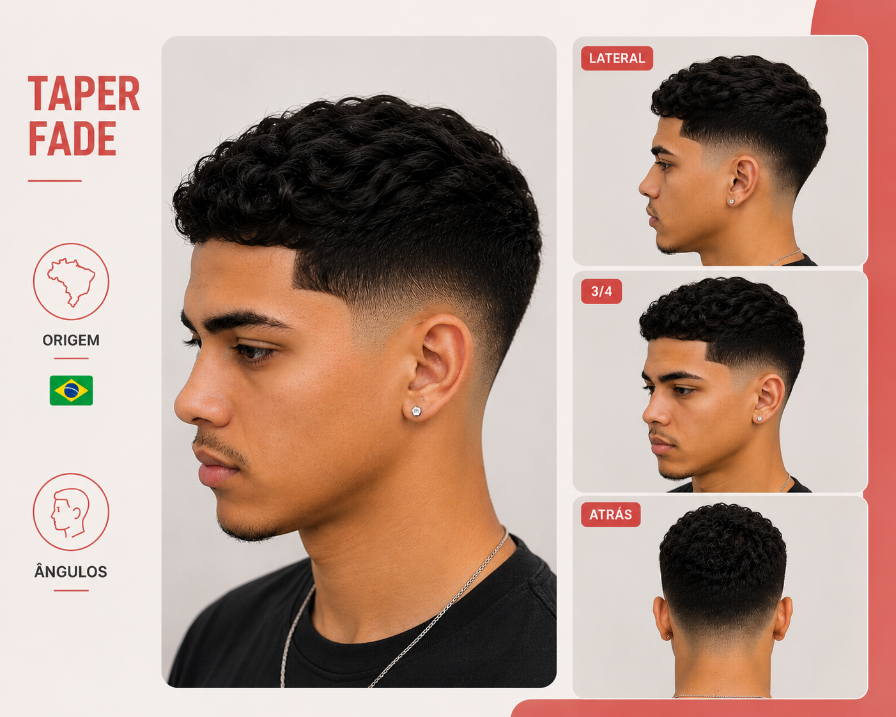

A LocalArt é especializada em cortes de cabelo e barba inspirados na
cultura brasileira. Nossos profissionais são treinados para criar
estilos únicos que refletem a diversidade e a riqueza cultural do
Brasil. Venha experimentar um corte que é verdadeiramente brasileiro!

• O Degradê Baixo é o corte mais “universal” do Brasil porque
funciona em cabelo liso, ondulado e cacheado. O segredo dele é o
acabamento limpo sem subir demais a lateral, então mantém um visual
alinhado sem parecer militar. Nas periferias e barbearias de
quebrada ele virou padrão porque combina com estilo urbano,
corrente, camisa de time e estética do funk/trap. Como barbeiro eu
diria que é o corte mais seguro: difícil ficar feio e fácil de
adaptar ao rosto.

• O French Crop ficou famoso no Brasil porque mistura influência
europeia com estética de jogador de futebol e trapper brasileiro. A
franja curta dá personalidade sem exigir muito cuidado no dia a dia.
Muita gente usa porque o corte deixa o rosto mais marcado e combina
bem com fade na lateral. Nas barbearias ele explodiu porque passa
uma imagem moderna sem parecer exagerada. É o tipo de corte que
chama atenção sem depender de desenho ou risco.

• O Taper Fade cresceu muito no Brasil porque entrega aparência
limpa sem parecer “raspado demais”. Diferente do degradê clássico,
ele concentra o acabamento mais na costeleta e nuca, então fica
elegante até quando o cabelo cresce. Virou febre entre quem gosta de
visual mais arrumado, mas ainda ligado à cultura urbana. Muito
cantor, atleta e influencer brasileiro ajudou a popularizar o corte.